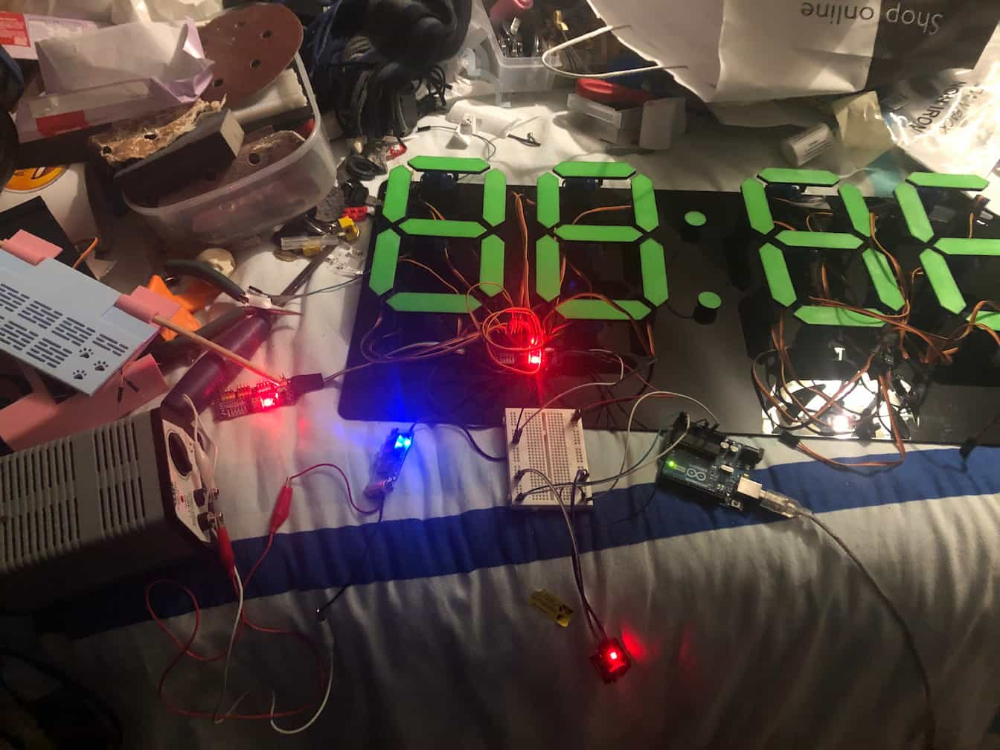
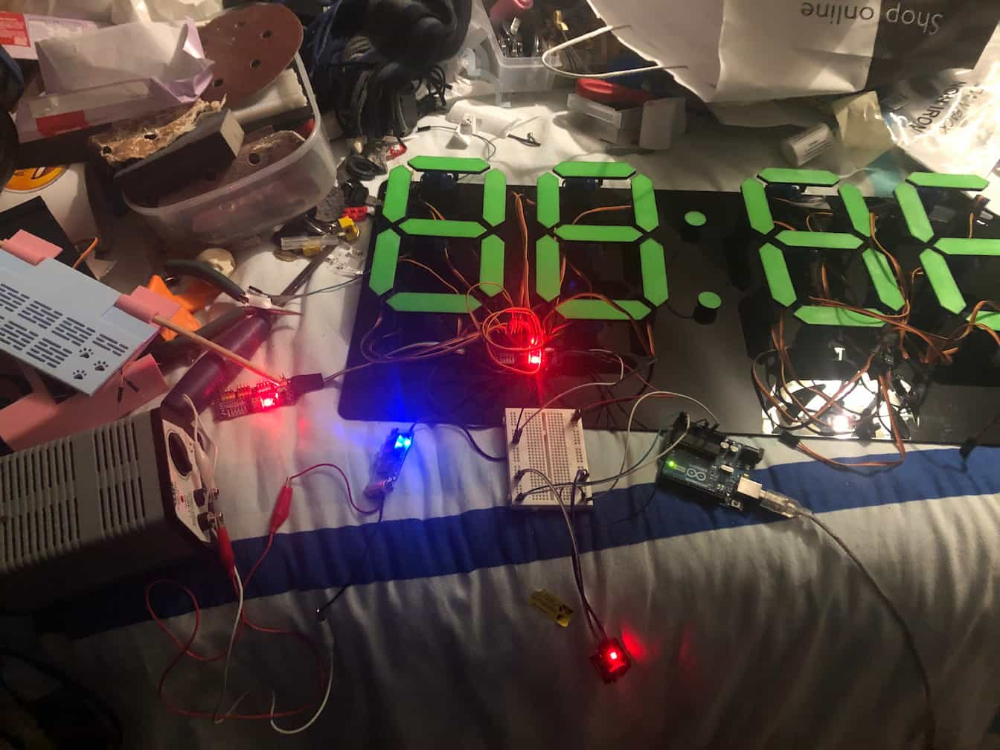

Clock
- A Mechanical 7-Segment Display
Description
I created this clock for our school canteen. The time is indicated by the servo-arm positions. I have worked on this project for the last two years (part-time). Instead of hiding the wires, I chose to display them, creating this flowing, visual effect. The segments are made from neon-green PETG, spray-painted black. I used superglue to attach the wires to the backing. Each segment was glued in place by hand and I had to define the up and down positions for each of them accordingly. The RTC module keeps time when the clock is unplugged. This clock uses plastic-gear servos, during setup and testing six servos jammed and stopped working, forcing me to dissassemble each and fix the issue while half of it's housing was still glued down. Thankfully I never cracked the backing, but if I did this agian I would use metal gear servo motors, and not suffer through any of that again. I added a startup sequence so servos aren't damaged at power-on.Acknowledgement
This clock is based on work from Michael Klements at the DIY-Life. I designed the laser-cut backing board, modified the software for moving the segments between time changes and accounted for Irish daylight savings.In the ten days before Christmas, the clock now displays a countdown. They don't know that yet. □
 


.jpg)
.jpg)
.jpg)